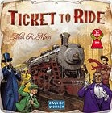
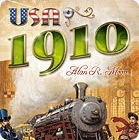
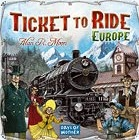
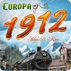
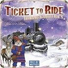
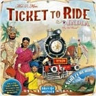
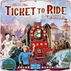

| Land | Udvidelse | Personer | Antal tog | Station? | Dobbeltspor | Rutekort type | Start Rutekort | Spil Rutekort | Express (Længest) point | Special |
|---|---|---|---|---|---|---|---|---|---|---|
| USA | - | 2-5 | 45 | 4-5 personer | Alle kort uden "1910" (34 stk.) | 3 - og behold mindst 2 | 3 - og behold mindst 1 | Express (Længest) | - | |
| USA | 1910 | 2-5 | 45 | 4-5 personer | Alle kort med "1910" (35 stk.) | 3 - og behold mindst 2 | 3 - og behold mindst 1 | Globetrotter (Flest byer) | Husk anderledes bonus! | |
| USA | MEGA | 2-5 | 45 | 4-5 personer | Alle kort (69 stk.) | 5 - og behold mindst 3 | 4 - og behold mindst 1 | Express (Længest) | - | |
| USA | Storbyer | 2-5 | 45 | 4-5 personer | Alle kort med "Big Cities" (35 stk.) | 4 - og behold mindst 2 | 4 - og behold mindst 1 | Express (Længest) | Kortet med USA's storbyer lægges frem så alle kan se det. | |
| Europa | - | 2-5 | 45 | 4-5 personer | Alle kort uden"1912". Brug dem med blå cirkel. Kortene deles op i lang og alm. ruter. |
1 lang + 2 alm - og behold mindst 2 | 3 - og behold mindst 1 | Express (Længest) | Færge + Tunnel | |
| Europa | Plus | 2-5 | 45 | 4-5 personer | Alle kort med blå cirkel + 19 alm. kort med "1912". Kortene deles op i lang og alm. ruter. |
1 lang + 2 alm - og behold mindst 2 | 3 - og behold mindst 1 | Express (Længest) | Færge + Tunnel | |
| Europa | MEGA | 2-5 | 45 | 4-5 personer | Alle kort. Kortene deles op i lang og alm. ruter. |
2 lang + 5 alm. Skal beholde max. 1 lang. Hvis ingen lang kort så skal mindst 3 alm. Hvis 1 lang kort, så skal mindst 2 alm. |
3 - og behold mindst 1 | Express (Længest) | Færge + Tunnel | |
| Europa | Storbyer | 2-5 | 45 | 4-5 personer | Alle kort med storby-logo. Der er ingen lange rutekort med! |
5 - og behold mindst 2 | 4 - og behold mindst 1. | Express (Længest) | Færge + Tunnel | |
| Norden | - | personer | tog | station | DS | rutekort type | start RK | spil RK | Express (Længest) | special |
| Switzerland | - | 2-3 | 40 | 3 personer | Almindelige | 5 - og behold mindst 2 | 3 - og behold mindst 1 | Express (Længest) | OBS! Kun 40 tog. Lokomotiv (Joker) kan kun bruges til tunnel! Men der kan tages 2 af dem synlig af de 5 togkort på bordet. |
|
| Indien | - | 2-4 | 45 | 4 personer | Almindelige | 4 - og behold mindst 2 | 3 - og behold mindst 1 | Express (Længest) + Mandala (Cirkler) | Mandala betyder at man får point hvis der er mere end én strækning mellem de to endestationer i rutekortet. De to strækning må ikke deles om de samme ruter | |
| Legendary Asia | - | 2-5 | 45 | 4-5 personer | Almindelige | 1 lang + 3 alm. Skal beholde den lange og mindst 2 alm kort. |
3 - og behold mindst 1 | Express (Længest) | Togfelt på kortet med kryds betyder at du skal fjerne toget, lægge det i "graven" og få 2 point for toget og lægge en ny tog på feltet. | |
| Asia | - | 4-6 | 45 + 9 ekstra | station | DS | Almindelige | start RK | spil RK | Express (Længest) | Holdspil i par. |